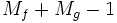

Inhalt |
Der Algorithmus für Faltung in Origin basiert auf der Faltungstheorem. Gemäß dem Theorem entspricht das Falten eines Signals mit einer Antwort dem Multiplizieren ihrer Fourier-Transformationen und das nachfolgende Durchführen einer inversen Transformation für das Produkt. Daher:
wenn die folgenden Annahmen gelten:
Die realen Daten erfüllen jedoch nicht immer diese zwei Anforderungen. Einige Nullen müssen der Eingabe hinzugefügt werden, so dass der auf dem Faltungstheorem basierende Algorithmus angewendet werden kann. Gleichzeitig sollte sicher gestellt werden, dass das Auffüllen mit Nullen und die Annahme der Periodizität keine "Verschmutzung" der Ergebnisse zur Folge hat.
Bei einer zirkulären Faltung wird davon ausgegangen, dass die Datenpunkte außerhalb des Eingabebereichs sich periodisch wiederholen und damit die erste Anforderung erfüllen. Nullen müssen bis zum Ende der Eingabesequenz (das Signal oder die Antwort) bei der kürzeren Länge aufgefüllt werden, um sicher zu stellen, dass die Längen der beiden Eingabesequenzen gleich sind.
Bei der linearen Faltung werden die Datenpunkte außerhalb des Eingabebereichs jedoch als Nullen betrachtet. Angenommen das Signal ist periodisch, dann ist das Ergebnis "verschmutzt", weil die Verpackung einige Daten der Enden zu Punkten am Anfang des Ergebnisses hinzugefügt. Zur Vermeidung dieser Art von "Verschmutzung" müssen Nullen aufgefüllt werden, um einen Puffer für die verpackten Daten zu bilden. Nach dem Auffüllen sollten die Längen beider Eingaben folgendermaßen aussehen:

wobei und die Längen von f und g bezeichnet.
Nach dem Auffüllen wird der oben genannte schnelle Faltungsalgorithmus verwendet, um das Faltungsergebnis zu berechnen.
Wenn <Auto> für das Abtastintervall ausgewählt wird, wird das in der Berechnung erforderliche Abtastintervall automatisch von Origin berechnet.
Das automatisch berechnete Abtastintervall ist das durchschnittliche Inkrement der Zeitsequenz, die normalerweise aus der X-Spalte kommt, die mit dem Eingabesignal verbunden ist. Gibt es keine verbundene X-Spalte, werden die Zeilennummern verwendet. Beachten Sie, dass das Abtastintervall auf 1 gesetzt wird, wenn Origin das durchschnittliche Inkrement nicht erhält.